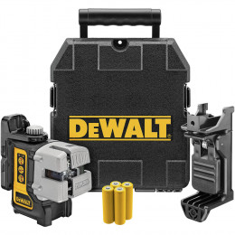

NIVEL LÁSER DE 3 LÍNEAS CRUZADAS
- PLATAFORMA DE BATERIAS 12V/ 20V MAX* Compatibles con el sistema de baterías 12V MAX* y 20V MAX* para mayor versatilidad
- 10 HORAS DE TIEMPO DE USO, Con 3 Líneas Laser
- HAZ VERDE Proveealtavisibilidada distanciaslargas
- Rango visible de 36 ft.
- Interruptor de bloque.
- Nivel láser línea cruzada.
- Panel de control con panel táctil.
- Línea vertical y horizontal de 100°.
- Soporte de alcance rápido extraíble.
- El péndulo de bloqueo ayuda a prevenir daños.
- Interruptor de bloqueo
